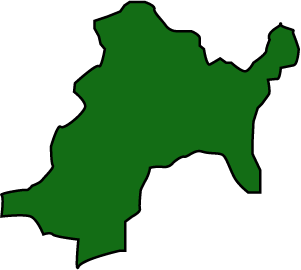

Miyagi Prefecture is located in the Tohoku region of Honshu and it sits between the vast Ou Mountains and borders Japan’s eastern Pacific coast. Miyagi also boasts the Matsushima Islands, ranked as one of the Three Views of Japan, or Japan’s most celebrated scenic sites. In 2011, Miyagi was hit by both a 9.0 and 7.1 magnitude earthquake followed by a devastating tsunami. Miyagi Prefecture produces 4.7% of Japan’s rice, 23% of Japan’s oysters, and 15.9% of Japan’s sauries with its rather large fisheries. Miyagi is also well-known for its anime in popular culture! (Source: Miyagi Official Site)
Prefecture Image
